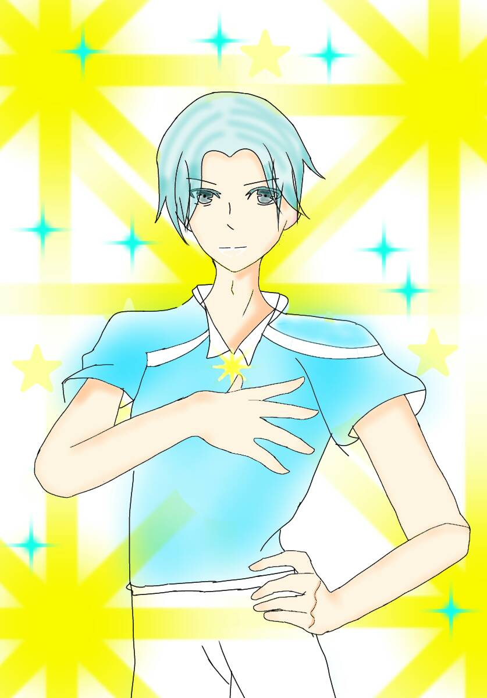

星星
The Stars
四大元素：元素風--信心與勇氣
代表神話故事：潘朵拉的盒子
星星是暴風雨過後的平靜，像一顆放鬆的心；或是指引心靈的光，在一切歸零時讓人重新振作的信念。
在對目標感到迷惘時，星星給予的希望能成為精神的支撐。
前進的動力
大自然的治療
溫潤人本性
土地是意識，水池是創造性的來源，此象徵她能透晰潛意識，
與自己和自然的本質有良好的連繫，樹上鳥代表心靈的昇華，
星星群象徵著信心和希望，
星星所彰顯的是“透晰性”。
關鍵語靈感、放鬆、治療、和平
★暗示充滿創造力和對生命可能性的信心
牌正面光明的未來，希望，平靜，和平，
和潛意識溝通良好，靈感。
牌反面失去目標和心靈的連繫，感傷，沒有靈感，空虛。
塔牌過後的星星牌，象徵著巨變之後的唯一希望，
因為塔的破壞使得一切都歸零，
正因如此人們需要一個新的信念或希望，
星星牌有時候也象徵著一種內心的寧靜，
當一個人一無所有時，心反而變得寬廣了，
因為他在也沒有什麼好失去的，自然沒有任何事物能在威脅他。
然而星星之美遙不可及，「希望」與「樂觀」畢竟只是一個信念，
雖然它能夠給予你新的勇氣，或前進的動力，
但若只是好高騖遠、想而不做，
只會更難以達成你的願望，切記星星牌象徵的不是絕對的成功。